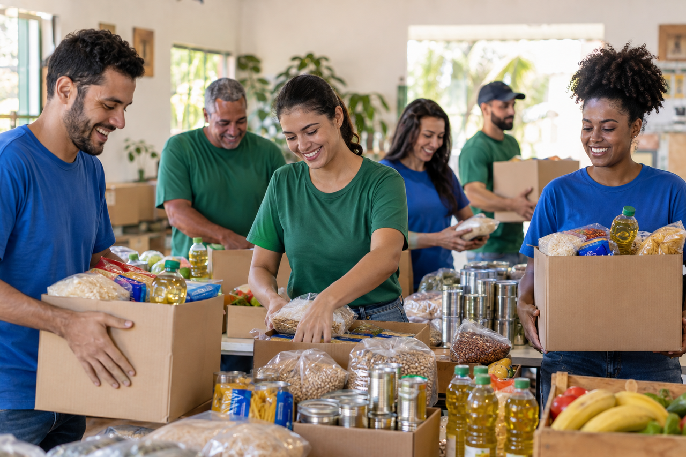

Campanhas solidárias
Arrecadação de alimentos, roupas e materiais escolares para famílias da comunidade.
Juntos pela comunidade
A ONG Esperança apoia famílias em situação de vulnerabilidade por meio de campanhas, atividades educativas e trabalho voluntário.

Quem somos
A ONG Esperança é uma organização fictícia criada para esta atividade acadêmica. Sua missão é fortalecer a comunidade, incentivar a solidariedade e oferecer apoio a quem mais precisa.
Nossa atuação
Arrecadação de alimentos, roupas e materiais escolares para famílias da comunidade.
Atividades que promovem aprendizagem, convivência e desenvolvimento social.
Pessoas que oferecem tempo e conhecimento para apoiar nossas ações.
Fale conosco
Tem alguma dúvida? Nossa equipe está pronta para conversar.
Os contatos abaixo são ilustrativos para esta atividade acadêmica.
E-mail: contato@ongesperanca.org
Telefone: (48) 99999-9999
Localização: Santa Catarina, Brasil